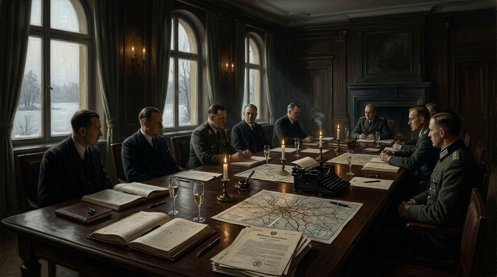

How Adolf Fucked Europe.
A forensic reckoning with administrative horror, the casual bureaucracy of Wannsee, the financial accounting of genocide, and a nation seduced into moral and physical oblivion.

The Banality of Evil: Administrative Annihilation
Deconstructing the mechanisms highlighted by Trevor Swistchew: casual executive meetings, bureaucratic ledgers, and catastrophic moral collapse.
The 90-Minute Administrative Routine (January 20, 1942)
At a secluded villa on Lake Wannsee outside Berlin (Am Großen Wannsee 56–58), fifteen senior Nazi officials, SS leaders, and ministry state secretaries convened. Over a luncheon of fine food, champagne, and tobacco, they coordinated the continental extermination of 11 million human beings in less than an hour and a half.
As Trevor observes, the atmosphere was casual, dull, and routinely bureaucratic: typed up by Adolf Eichmann and an attendant secretary into an administrative minute protocol with euphemisms like “evacuation” and “special treatment” disguising unfathomable mass slaughter.
In the Reich Hitler wanted the extermination of every European Jew. The Nazis met at Wannsee in Berlin to decide the Final Solution in a most casual way with champagne and food and plenty of things to use as relaxants for the Gathering.
They talked as if they were organising a festival of events. The talk was routine almost dull with an atmosphere quiet with interjections and suggestions noted by the attendant secretary then typed into the Report.
The planning was inclusive of land materials rail tracks personnel media suppression in a filed system of accounts Estimated costs exceeded 10 Billion Marks. Hitler laughed the amount off with a gesture then said “Germany with MY Leadership is the most powerful land in Europe.”
“Exteminating all Jews in Europe was AFFORDABLE. The manner of the Nazis was almost astounding with the extermination of millions of men women and children talked about in a way to embarrass even the hardest Generals in the Reich.”
There is no explaining it although many have tried for the entire German enterprise was illogical and outwith anything most of the world had ever seen.
When Hitlers regime were gone there was only the guilt of a country who had followed an idea to their own oblivion.
In 2026 Germany is still impacted.